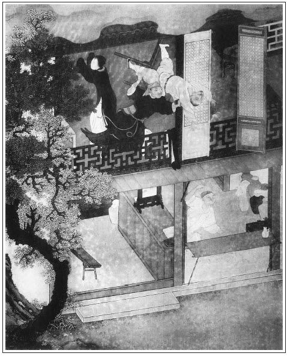

張回此回，金蓮歸花園內矣。須記清三間樓，一個院，一個獨角門，且是無人跡到之處。記清，方許他往後讀。
此回偷娶金蓮，卻是順出春梅。而出春梅時，必雲月娘房裡兩個丫頭，一個春梅，一個玉簫。明是作者恐人冤他第一回內，不曾在「大丫頭」三字中出春梅也。又恐無目者猶然不知，下又雲另買一個小丫頭云云。明明說先有一個小丫頭，陪此「大丫頭」，三字者為春梅也。予言豈不益信？亦如玉樓之名，觀其簪上詩句益信。
內將月娘眾人俱在金蓮眼中描出，而金蓮又重新在月娘眼中描出。文字生色之妙，全在兩邊掩映。
下文武二文字中，將李外傳替死，自是必然之法。又恐與《水滸》相左，為世俗不知文者口實，乃於結處止用一「倒說是西門大官人被武松打死了」，遂使《水滸》文字，絕不礙手。妙絕，妙絕。
詩曰：
感郎耽夙愛，著意守香奩。
歲月多忘遠，情綜任久淹。
于飛期燕燕，比翼誓鶼鶼。
細數從前意，時時屈指尖。

話說西門慶與潘金蓮燒了武大靈，到次日，又安排一席酒，請王婆作辭，張夾為後文冷王婆作映。就把迎兒交付與王婆看養。因商量道：「武二回來，卻怎生不與他知道六姐是我娶了才好？」王婆笑道：「有老身在此，任武二那廝怎地兜達，我自有話回他。大官人只管放心！」西門慶聽了，滿心歡喜，又將三兩銀子謝他。當晚就將婦人箱籠，都打發了家去，剩下些破桌、壞凳、舊衣裳，張夾是武大傢俬。都與了王婆。到次日初八，一頂轎子，四個燈籠，婦人換了一身艷色衣服，王婆送親，玳安跟轎，把婦人抬到家中來。那條街上，遠近人家無一不知此事，都懼怕西門慶有錢有勢，不敢來多管，只編了四句口號，說得好：
堪笑西門不識羞，先奸後娶醜名留。
轎內坐著浪淫婦，後邊跟著老牽頭。張旁為後武二問人作地也。
西門慶娶婦人到家，收拾花園內樓下三間張夾記清花園。與他做房。一個獨獨小角門兒進去，院內設放花草盆景。白日間人跡罕到，張夾必用此句，早又為敬濟下線。極是一個幽僻去處。一邊是外房，一邊是臥房。西門慶旋用十六兩銀子買了一張黑漆歡門描金床，張夾又伏床。大紅羅圈金帳幔，寶象花揀妝，桌椅錦杌，擺設齊整。張夾忽然富貴。大娘子吳月娘房裡使著兩個丫頭，一名春梅，一名玉簫。西門慶把春梅叫到金蓮房內，令他伏侍金蓮，趕著叫娘。卻用五兩銀子另買一個小丫頭，名叫小玉，伏侍月娘。張夾則我雲大丫頭內有春梅，觀此篇益信矣。又替金蓮六兩銀子買了一個上灶丫頭，名喚秋菊。排行金蓮做第五房。先頭陳家娘子陪嫁的，名喚孫雪娥，約二十年紀，生的五短身材，有姿色。西門慶與他戴了䯼髻，排行第四，以此把金蓮做個第五房。張夾雪娥，只借金蓮敘排五的原故，帶出。此事表過不題。
這婦人一娶過門來，西門慶就在婦人房中宿歇，如魚似水，美愛無加。到第二日，婦人梳妝打扮，穿一套艷色服，春梅捧茶，走來後邊大娘子吳月娘房裡，拜見大小，遞見面鞋腳。月娘在座上仔細觀看，這婦人年紀不上二十五六，生的這樣標緻。但見：
眉似初春柳葉，常含著雨恨雲愁；臉如三月桃花，暗帶著風情月意。纖腰裊娜，拘束的燕懶鶯慵；檀口輕盈，勾引得峰狂蝶亂。玉貌妖嬈花解語，芳容窈窕玉生香。
吳月娘從頭看到腳，風流往下跑；從腳看到頭，風流往上流。繡眉二語於金蓮性情得其似論風流，如水泥晶盤內走明珠；繡旁圓活艷麗可想。語態度，似紅杏枝頭籠曉日。看了一回，口中不言，心內想道：「小廝每來家，只說武大怎樣一個老婆，不曾看見，不想果然生的標緻，怪不的俺那強人愛他。」繡眉此一想，若驚若妒，不獨寫月娘心事，畫金蓮美貌，而無意化作有意，且包盡從前之漏。張夾蓋是把一向的月娘點出，非單描金蓮也。金蓮先與月娘磕了頭，遞了鞋腳。月娘受了他四禮。次後李嬌兒、孟玉樓、孫雪娥，都拜見了，平敘了姊妹之禮，立在旁邊。月娘叫丫頭拿個坐兒教他坐，吩咐丫頭、媳婦趕著他叫五娘。這婦人坐在旁邊，不轉睛把眾人偷看。見吳月娘約三九年紀，生的面如銀盆，眼如杏子，舉止溫柔，持重寡言。第二個李嬌兒，乃院中唱的，生的肌膚豐肥，身體沉重，雖數名妓者之稱，而風月多不及金蓮也。張夾此處貶嬌兒，卻是貶金蓮。第三個就是新娶的孟玉樓，約三十年紀，生得貌若梨花，腰如楊柳，長挑身材，瓜子臉兒，稀稀多幾點微麻，自是天然俏麗，惟裙下雙灣與金蓮無大小之分。第四個孫雪娥，乃房裡出身，五短身材，輕盈體態，能造五鮮湯水，善舞翠盤之妙。這婦人一抹兒都看在心裡。張夾從金蓮眼內，將眾人都照出。過三日之後，每日清晨起來，就來房裡與月娘做針指，做鞋腳，凡事不拿強拿，不動強動。繡眉有心人作用，非新媳婦三日勤。指著丫頭趕著月娘，一口一聲只叫大娘，快把小意兒貼戀幾次，把月娘喜歡得沒入腳處，稱呼他做六姐。衣服首飾揀心愛的與他，吃飯喫茶都和他在一處。繡眉試看金蓮入門，與月娘先親而後疏；瓶兒入門，與月娘先忤而後合。君子小人交道，不可不慎。因此，李嬌兒眾人見月娘錯敬他，都氣不忿，張旁映後私僕文字。背後常說：「俺們是舊人，到不理論。他來了多少時，便這等慣了他。大姐姐好沒分曉！」西門慶自娶潘金蓮來家，住著深宅大院，衣服頭面又相趁，張夾映在武大家。二人女貌郎才，正在妙年之際，凡事如膠似漆，百依百隨，淫慾之事，無日無之。且按下不題。
單表武松，八月初旬到了清河縣，先去縣裡納了回書。知縣見了大喜，已知金寶交得明白，賞了武松十兩銀子，酒食管待，不必細說。武松回到下處，換了衣服鞋襪，戴了一頂新頭巾，鎖了房門，一徑投紫石街來。兩邊眾鄰舍看見武松回來，都吃一驚，捏兩把汗，說道：「這番蕭牆禍起了！這個太歲歸來，怎肯干休！」張夾百忙裡卻夾敘鄰舍。武松走到哥哥門前，揭起簾子，探身入來，看見小女迎兒在樓穿廊下攆線。叫聲哥哥也不應，叫聲嫂嫂也不應，道：「我莫不耳聾了，如何不見哥嫂聲音？」向前便問迎兒。那迎兒見他叔叔來，嚇的不敢言語。武松道：「你爹娘往那裡去了？」迎兒只是哭，不做聲。繡眉寫迎兒愚蠢處，真不忝武大親生。正問間，隔壁王婆聽得是武二歸來，生怕決撒了，慌忙走過來。
武二見王婆過來，唱了喏，問道：「我哥哥往那裡去了？嫂嫂也怎的不見？」婆子道：「二哥請坐，我告訴你。你哥哥自從你去後，到四月間得個拙病死了。」武二道：「我哥哥四月幾時死的？得什麼病？吃誰的藥來？」王婆道：「你哥哥四月二十頭，猛可地害起心疼起來，病了八九日，求神問卜，什麼藥不吃到？繡旁葫蘆得妙醫治不好，死了。」武二道：「我的哥哥從來不曾有這病，如何心疼便死了？」王婆道：「都頭卻怎的這般說？天有不測風雲，人有旦夕禍福。今晚脫了鞋和襪，未審明朝穿不穿。誰人保得常沒事？」繡旁一篇世情語，出脫得乾乾淨淨，非武松將奈他何！武二道：「我哥哥如今埋在那裡？」王婆道：「你哥哥一倒了頭，家中一文錢也沒有，大娘子又是沒腳蟹，那裡去尋墳地？虧左近一個財主舊與大郎有一面之交，捨助一具棺木，沒奈何放了三日，抬出去火葬了。」武二道：「如今嫂嫂往那裡去了？」婆子道：「他少女嫩婦的，又沒的養贍過日子。胡亂守了百日孝，他娘勸他，前月嫁了外京人去了。丟下這個業障丫頭子，教我替他養活。繡眉又埋怨兩句，妙甚。專等你回來交付與你，也了我一場事。」武二聽言，沉吟了半晌，繡旁不哭只沉吟，最肖。便撇下王婆出門去，逕投縣前下處。開了門進房裡，換了一身素衣，便叫土兵街上打了一條麻絛，買了一雙綿褲，一頂孝帽戴在頭上；張夾此文比伯爵灑土迷眼時何如？總是語語刺人家弟兄心內也。又買了些果品點心、香燭冥紙、金銀錠之類，歸到哥哥家，從新安設武大靈位。安排羹飯，點起香燭，鋪設酒餚，掛起經幡紙繒，安排得端正。繡旁細。約一更已後，武二拈了香，撲翻身便拜，道：「哥哥陰魂不遠，你在世時，為人軟弱，今日死後，不見分明。你若負屈含冤，被人害了，托夢與我，兄弟替你報冤雪恨！」把酒一面澆奠了，燒化冥紙，武二便放聲大哭。繡眉只到此時方大哭，寫出豪傑堅忍真至性情，與兒女子不同。終是一路上來的人，哭的那兩邊鄰舍無不恓惶。張夾我也陪他一哭，不知何故。武二哭罷，將這羹飯酒餚和土兵、迎兒吃了。討兩條蓆子，教土兵房外旁邊睡，迎兒房中睡，他便自把條蓆子，就武大靈桌子前睡。
約莫將半夜時分，武二翻來覆去那裡睡得著，口裡只是長吁氣。那土兵齁齁的卻似死人一般，張夾偏照管上兵到。挺在那裡。武二爬將起來看時，那靈桌子上琉璃燈半明半滅。武二坐在蓆子上，自言自語，口裡說道：「我哥哥生時懦弱，死後卻無分明。」說猶未了，只見那靈桌子下捲起一陣冷風來。但見：
無形無影，非霧非煙。盤旋似怪風侵骨冷，凜冽如殺氣透肌寒。昏昏暗暗，靈前燈火失光明；慘慘幽幽，壁上紙錢飛散亂。隱隱遮藏食毒鬼，紛紛飄逐影魂幡。張夾紙上有鬼出現。
那陣冷風，逼得武二毛髮皆豎起來。繡眉是不怕，卻又凜凜然，光景逼真。定睛看時，見一個人從靈桌底下鑽將出來，叫聲：「兄弟！我死得好苦也！」武二看不仔細，卻待向前再問時，只見冷氣散了，不見了人。武二一交跌翻在蓆子上坐的，尋思道：「怪哉！似夢非夢。剛才我哥哥正要報我知道，又被我的神氣衝散了。想來他這一死，必然不明。」聽那更鼓，正打三更三點。回頭看那土兵，正睡得好。張夾又照土兵。於是咄咄不樂，只等天明，卻再理會。
看看五更雞叫，東方漸明。土兵起來燒湯，武二洗漱了，喚起迎兒看家，帶領土兵出了門。在街上訪問街坊鄰舍：「我哥哥怎的死了？嫂嫂嫁得何人去了？」那街坊鄰舍明知此事，都懼怕西門慶，誰肯來管？只說：「都頭，不消訪問，王婆在緊隔壁住，只問王婆就知了。」有那多口的說：「賣梨的鄆哥兒與仵作何九，二人最知詳細。」這武二竟走來街坊前去尋鄆哥。只見那小猴子手裡拿著個柳籠簸羅兒，正糴米回來。武二便叫鄆哥道：「兄弟！」唱喏。那小廝見是武二叫他，便道：「武都頭，你來遲了一步兒，須動不得手。張夾賊。只是一件，我的老爹六十歲，沒人養贍，我卻難保你們打官司。」繡眉直認處，推托處，語語俱含挑撥意，鄆哥自賊。張夾賊。武二道：「好兄弟，跟我來。」引他到一個飯店樓上，武二叫貨賣造兩分飯來。武二對鄆哥道：「兄弟，你雖年幼，張夾寫出精武二細。倒有養家孝順之心。我沒甚麼──」向身邊摸出五兩碎銀子，遞與鄆哥道：「你且拿去與老爹做盤費。待事務畢了，我再與你十來兩銀子做本錢。你可備細說與我：哥哥和甚人合氣？被甚人謀害了？家中嫂嫂被那一個娶去？你一一說來，休要隱匿。」這鄆哥一手接過銀子，自心裡想道：「這些銀子，老爹也夠盤費得三五個月，便陪他打官司也不妨。」張夾賊。反襯捉姦。一面說道：「武二哥，你聽我說，卻休氣苦。」於是把賣梨兒尋西門慶，後被王婆怎地打他，不放進去，又怎地幫扶武大捉姦，西門慶怎的踢中了武大，心疼了幾日，不知怎的死了，張眉三個「怎的」，忽接一「不知怎的」，又與伯爵講打虎遙照。張夾妙。從頭至尾細說了一遍。武二聽了，便道：「你這話卻是實麼？」又問道：「我的嫂子實嫁與何人去了？」鄆哥道：「你嫂子吃西門慶抬到家，待搗吊底子兒，自還問他實也是虛！」武二道：「你休說謊。」鄆哥道：「我便官府面前，也只是這般說。」繡眉是小廝家激切，沒忌避口角。武二道：「兄弟，既然如此，討飯來吃。」須臾，吃了飯。武二還了飯錢，兩個下樓來，吩咐鄆哥：「你回家把盤纏交與老爹，明日早上來縣前，與我作證。」又問：「何九在那裡居住？」鄆哥道：「你這時候還尋何九？他三日前聽見你回，便走的不知去向了。」繡眉補得乾淨。張夾先藏過何九。這武二放了鄆哥家去。
到第二日，早起，先在陳先生家寫了狀子，張夾細。走到縣門前。只見鄆哥也在那裡伺候，一直奔到廳上跪下，聲冤起來。知縣看見，認的是武松，便問：「你告什麼？因何聲冤？」武二告道：「小人哥哥武大，被豪惡西門慶與嫂潘氏通姦，踢中心窩，王婆主謀，陷害性命。何九朦朧入殮，燒燬屍傷。見今西門慶霸佔嫂子在家為妾。見有這個小廝鄆哥是證見。望相公作主則個。」因遞上狀子。知縣接著，便問：「何九怎的不見？」武二道：「何九知情在逃，不知去向。」知縣於是摘問了鄆哥口詞，當下退廳與佐二官吏通同商議。原來知縣、縣丞、主簿、典史，上下都是與西門慶有首尾的，因此官吏通同計較，這件事難以問理。知縣隨出來叫武松道：「你也是個本縣中都頭，怎不省得法度？自古捉姦見雙，殺人見傷。你那哥哥屍首又沒了，又不曾捉得他奸。你今只憑這小廝口內言語，便問他殺人的公事，莫非公道忒偏向麼？你不可造次，須要自己尋思。」武二道：「告稟相公，這都是實情，不是小人捏造出來的。只望相公拿西門慶與嫂潘氏、王婆來，當堂盡法一番，其冤自見。若有虛誣，小人情願甘罪。」知縣道：「你且起來，待我從長計較。繡眉不知與誰計較，或曰家兄。可行時，便與你拿人。」武二方才起來，走出外邊，把鄆哥留在屋裡，不放回家。繡旁老到。
早有人把這件事報與西門慶得知。西門慶聽得慌了，忙叫心腹家人來保、來旺，繡旁伏。身邊帶著銀兩，連夜將官吏都買囑了。到次日早晨，武二在廳上指望告稟知縣，催逼拿人。誰想這官人受了賄賂，早發下狀子來，說道：「武松，你休聽外人挑撥，和西門慶做對頭。這件事欠明白，難以問理。聖人云：經目之事，猶恐未真；背後之言，豈能全信？你不可一時造次。」當該吏典在旁，便道：「都頭，你在衙門裡也曉得法律，但凡人命之事，須要屍、傷、病、物、蹤，五件事俱完，方可推問。你那哥哥屍首又沒了，怎生問理？」繡眉分明受賄，卻說出一團道理，斷獄之不可論理也如此。武二道：「若恁的說時，小人哥哥的冤仇，難道終不能報便罷了？既然相公不准所告，且卻有理。」遂收了狀子，下廳來。來到下處，放了鄆哥歸家，不覺仰天長歎一聲，咬牙切齒，口中罵淫婦不絕。
武松是何等漢子，怎消洋得這口惡氣！張夾寫生。一直走到西門慶生藥店前，要尋西門慶廝打。正見他開舖子的傅夥計在櫃身裡面，見武二狠狠的走來，問道：「你大官人在宅上麼？」傅夥計認的是武二，便道：「不在家了。都頭有甚話說？」武二道：「且請借一步說句。」傅夥計不敢不出來，被武二引到僻靜巷口。武二翻過臉來，用手撮住他衣領，睜圓怪眼說道：「你要死，卻是要活？」繡旁開口怕人。傅夥計道：「都頭在上，小人又不曾觸犯了都頭，都頭何故發怒？」武二道：「你若要死，便不要說；若要活時，對我實說。西門慶那廝如今在那裡？我的嫂子被他娶了多少日子？一一說來，我便罷休？」那傅夥計是個小膽的人，見武二發作，慌了手腳，說道：「都頭息怒，小人在他家，每月二兩銀子雇著，小人只開舖子，並不知他們閒帳。大官人本不在家，剛才和一相知，往獅子街大酒樓上吃酒去了。小人並不敢說謊。」繡眉語趣甚，且肖其為人。武二聽了此言，方才放了手，大扠步飛奔到獅子街來。嚇的傅夥計半日移腳不動。張夾襯出武二來。那武二逕奔到獅子街橋下酒樓前來。
且說西門慶正和縣中一個皂隸李外傳在樓上吃酒。原來那李外傳專一在府縣前綽攬些公事，往來聽氣兒撰些錢使。若有兩家告狀的，他便賣串兒；或是官吏打點，他便兩下裡打背。因此縣中就起了他這個諢名，叫做李外傳。那日見知縣回出武松狀子，討得這個消息，便來回報西門慶知道。因此西門慶讓他在酒樓上飲酒，把五兩銀子送他。正吃酒在熱鬧處，忽然把眼向樓窗下看，只見武松似凶神般從橋下直奔酒樓前來。已知此人來意不善，不覺心驚，欲待走了，卻又下樓不及，遂推更衣，走往後樓躲避。武二奔到酒樓前，便問酒保道：「西門慶在此麼？」酒保道：「西門大官人和一相識在樓上吃酒哩。」武二撥步撩衣，飛搶上樓去。早不見了西門慶，只見一個人坐在正面，兩個唱的粉頭坐在兩邊。繡眉忙中不苟。認的是本縣皂隸李外傳，就知是他來報信，不覺怒從心起，便走近前，指定李外傳罵道：「你這廝，把西門慶藏在那裡去了？快說了，饒你一頓拳頭！」李外傳看見武二，先嚇呆了，又見他惡狠狠逼緊來問，那裡還說得出話來！張夾描神。武二見他不則聲，越加惱怒，便一腳把桌子踢倒，碟兒盞兒都打得粉碎。兩個粉頭嚇得魂都沒了。李外傳見勢頭不好，強掙起身來，就要往樓下跑。武二一把扯回來道：「你這廝，問著不說，待要往那裡去？且吃我一拳，看你說也不說！」早颼的一拳，飛到李外傳臉上。李外傳叫聲啊呀，忍痛不過，只得說道：「西門慶才往後樓更衣去了，不干我事，饒我去罷！」武二聽了，就趁勢兒用雙手將他撮起來，隔著樓窗兒往外只一兜，說道：「你既要去，就饒你去罷！」撲通一聲，倒撞落在當街心裡。武二隨即趕到後樓來尋西門慶。此時西門慶聽見武松在前樓行兇，嚇得心膽都碎，便不顧性命，從後樓窗一跳，順著房簷，跳下人家後院內去了。武二見西門慶不在後樓，只道是李外傳說謊，急轉身奔下樓來，見李外傳已跌得半死，直挺挺在地下，還把眼動。氣不過，兜襠又是兩腳，早已哀哉斷氣身亡。眾人道：「這是李皂隸，他怎的得罪都頭來？為何打殺他？」武二道：「我自要打西門慶，不料這廝悔氣，卻和他一路，也撞在我手裡。」那地方保甲見人死了，又不敢向前捉武二，只得慢慢挨上來收籠他，那裡肯放鬆！連酒保王鸞並兩個粉頭包氏、牛氏都拴了，竟投縣衙裡來。此時哄動了獅子街，鬧了清河縣，街上議論的人，不計其數。卻不知道西門慶不該死，倒都說是西門慶大官人被武松打死了。繡旁脫卸得妙。張夾為《水滸》留地步也。正是：
李公吃了張公釀，鄭六生兒鄭九當。
世間幾許不平事，都付時人話短長。
文回文禹門云：此回脫卸《水滸傳》，歸入《金瓶梅》正傳。李外傳之傳，讀作去聲，方合本旨，故用之以脫卸西門慶。《水滸》為裡傳，此書為外傳也。
獨是武松一口惡氣，未能出得，看者能勿怏怏乎？惟其怏怏也，方可與看《金瓶梅》。必須怏怏到底，方知《金瓶梅》不是淫書也。或曰：假耳，何必怏快。予曰：既知是假，又何必看？第恐看到中間，又轉以為真。斯不若怏怏者，尚有天理良心也。